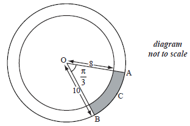

SL Paper 1
Let \(\sin \theta = \frac{2}{{\sqrt {13} }}\) , where \(\frac{\pi }{2} < \theta < \pi \) .
Find \(\cos \theta \) .
Find \(\tan 2\theta \) .
Let \(f(x) = \frac{{\cos x}}{{\sin x}}\) , for \(\sin x \ne 0\) .
In the following table, \(f'\left( {\frac{\pi }{2}} \right) = p\) and \(f''\left( {\frac{\pi }{2}} \right) = q\) . The table also gives approximate values of \(f'(x)\) and \(f''(x)\) near \(x = \frac{\pi }{2}\) .

Use the quotient rule to show that \(f'(x) = \frac{{ - 1}}{{{{\sin }^2}x}}\) .
Find \(f''(x)\) .
Find the value of p and of q.
Use information from the table to explain why there is a point of inflexion on the graph of f where \(x = \frac{\pi }{2}\) .
Let \(f(t) = a\cos b(t - c) + d\) , \(t \ge 0\) . Part of the graph of \(y = f(t)\) is given below.

When \(t = 3\) , there is a maximum value of 29, at M.
When \(t = 9\) , there is a minimum value of 15.
(i) Find the value of a.
(ii) Show that \(b = \frac{\pi }{6}\) .
(iii) Find the value of d.
(iv) Write down a value for c.
The transformation P is given by a horizontal stretch of a scale factor of \(\frac{1}{2}\) , followed by a translation of \(\left( {\begin{array}{*{20}{c}}
3\\
{ - 10}
\end{array}} \right)\) .
Let \({M'}\) be the image of M under P. Find the coordinates of \({M'}\) .
The graph of g is the image of the graph of f under P.
Find \(g(t)\) in the form \(g(t) = 7\cos B(t - c) + D\) .
The graph of g is the image of the graph of f under P.
Give a full geometric description of the transformation that maps the graph of g to the graph of f .
Consider \(g(x) = 3\sin 2x\) .
Write down the period of g.
On the diagram below, sketch the curve of g, for \(0 \le x \le 2\pi \) .

Write down the number of solutions to the equation \(g(x) = 2\) , for \(0 \le x \le 2\pi \) .
Let \(f(x) = {(\sin x + \cos x)^2}\) .
Show that \(f(x)\) can be expressed as \(1 + \sin 2x\) .
The graph of f is shown below for \(0 \le x \le 2\pi \) .

Let \(g(x) = 1 + \cos x\) . On the same set of axes, sketch the graph of g for \(0 \le x \le 2\pi \) .
The graph of g can be obtained from the graph of f under a horizontal stretch of scale factor p followed by a translation by the vector \(\left( {\begin{array}{*{20}{c}}
k\\
0
\end{array}} \right)\) .
Write down the value of p and a possible value of k .
Let \(f(x) = \sqrt 3 {{\rm{e}}^{2x}}\sin x + {{\rm{e}}^{2x}}\cos x\) , for \(0 \le x \le \pi \) . Solve the equation \(f(x) = 0\) .
Let \(f(x) = 3\sin \left( {\frac{\pi }{2}x} \right)\), for \(0 \leqslant x \leqslant 4\).
(i) Write down the amplitude of \(f\).
(ii) Find the period of \(f\).
On the following grid sketch the graph of \(f\).

Given that \(\sin x = \frac{3}{4}\), where \(x\) is an obtuse angle,
find the value of \(\cos x;\)
find the value of \(\cos 2x.\)
Note: In this question, distance is in metres and time is in seconds.
Two particles \({P_1}\) and \({P_2}\) start moving from a point A at the same time, along different straight lines.
After \(t\) seconds, the position of \({P_1}\) is given by r = \(\left( {\begin{array}{*{20}{c}} 4 \\ { - 1} \\ 3 \end{array}} \right) + t\left( {\begin{array}{*{20}{c}} 1 \\ 2 \\ { - 1} \end{array}} \right)\).
Two seconds after leaving A, \({P_1}\) is at point B.
Two seconds after leaving A, \({P_2}\) is at point C, where \(\overrightarrow {{\text{AC}}} = \left( {\begin{array}{*{20}{c}} 3 \\ 0 \\ 4 \end{array}} \right)\).
Find the coordinates of A.
Find \(\overrightarrow {{\text{AB}}} \);
Find \(\left| {\overrightarrow {{\text{AB}}} } \right|\).
Find \(\cos {\rm{B\hat AC}}\).
Hence or otherwise, find the distance between \({P_1}\) and \({P_2}\) two seconds after they leave A.
Let \(f(x) = 6 + 6\sin x\) . Part of the graph of f is shown below.

The shaded region is enclosed by the curve of f , the x-axis, and the y-axis.
Solve for \(0 \le x < 2\pi \)
(i) \(6 + 6\sin x = 6\) ;
(ii) \(6 + 6\sin x = 0\) .
Write down the exact value of the x-intercept of f , for \(0 \le x < 2\pi \) .
The area of the shaded region is k . Find the value of k , giving your answer in terms of \(\pi \) .
Let \(g(x) = 6 + 6\sin \left( {x - \frac{\pi }{2}} \right)\) . The graph of f is transformed to the graph of g.
Give a full geometric description of this transformation.
Let \(g(x) = 6 + 6\sin \left( {x - \frac{\pi }{2}} \right)\) . The graph of f is transformed to the graph of g.
Given that \(\int_p^{p + \frac{{3\pi }}{2}} {g(x){\rm{d}}x} = k\) and \(0 \le p < 2\pi \) , write down the two values of p.
The following diagram shows triangle \(ABC\).

Let \(\overrightarrow {{\text{AB}}} \bullet \overrightarrow {{\text{AC}}} = - 5\sqrt 3 \) and \(\left| {\overrightarrow {{\text{AB}}} } \right|\left| {\overrightarrow {{\text{AC}}} } \right| = 10\). Find the area of triangle \(ABC\).
Solve \(\cos 2x - 3\cos x - 3 - {\cos ^2}x = {\sin ^2}x\) , for \(0 \le x \le 2\pi \) .
Let \(f:x \mapsto {\sin ^3}x\) .
(i) Write down the range of the function f .
(ii) Consider \(f(x) = 1\) , \(0 \le x \le 2\pi \) . Write down the number of solutions to this equation. Justify your answer.
Find \(f'(x)\) , giving your answer in the form \(a{\sin ^p}x{\cos ^q}x\) where \(a{\text{, }}p{\text{, }}q \in \mathbb{Z}\) .
Let \(g(x) = \sqrt 3 \sin x{(\cos x)^{\frac{1}{2}}}\) for \(0 \le x \le \frac{\pi }{2}\) . Find the volume generated when the curve of g is revolved through \(2\pi \) about the x-axis.
The diagram below shows part of the graph of a function \(f\) .

The graph has a maximum at A(\(1\), \(5\)) and a minimum at B(\(3\), \( -1\)) .
The function \(f\) can be written in the form \(f(x) = p\sin (qx) + r\) . Find the value of
(a) \(p\)
(b) \(q\)
(c) \(r\) .
\(p\)
\(q\)
\(r\) .
The following diagram shows a circle with centre \(O\) and a radius of \(10\) cm. Points \(A\), \(B\) and \(C\) lie on the circle.

Angle \(AOB\) is \(1.2\) radians.
Find the length of \({\text{arc ACB}}\).
Find the perimeter of the shaded region.
The following table shows the probability distribution of a discrete random variable \(A\), in terms of an angle \(\theta \).

Show that \(\cos \theta = \frac{3}{4}\).
Given that \(\tan \theta > 0\), find \(\tan \theta \).
Let \(y = \frac{1}{{\cos x}}\), for \(0 < x < \frac{\pi }{2}\). The graph of \(y\)between \(x = \theta \) and \(x = \frac{\pi }{4}\) is rotated 360° about the \(x\)-axis. Find the volume of the solid formed.
Show that \(4 - \cos 2\theta + 5\sin \theta = 2{\sin ^2}\theta + 5\sin \theta + 3\) .
Hence, solve the equation \(4 - \cos 2\theta + 5\sin \theta = 0\) for \(0 \le \theta \le 2\pi \) .
Solve \({\log _2}(2\sin x) + {\log _2}(\cos x) = - 1\), for \(2\pi < x < \frac{{5\pi }}{2}\).
The straight line with equation \(y = \frac{3}{4}x\) makes an acute angle \(\theta \) with the x-axis.
Write down the value of \(\tan \theta \) .
Find the value of
(i) \(\sin 2\theta \) ;
(ii) \(\cos 2\theta \) .
Let \(\sin \theta = \frac{{\sqrt 5 }}{3}\), where \(\theta \) is acute.
Find \(\cos \theta \).
Find \(\cos 2\theta \).
Let \(f(x) = {\sin ^3}x + {\cos ^3}x\tan x,\frac{\pi }{2} < x < \pi \) .
Show that \(f(x) = \sin x\) .
Let \(\sin x = \frac{2}{3}\) . Show that \(f(2x) = - \frac{{4\sqrt 5 }}{9}\) .
The following diagram shows the graph of \(f(x) = a\sin (b(x - c)) + d\) , for \(2 \le x \le 10\) .

There is a maximum point at P(4, 12) and a minimum point at Q(8, −4) .
Use the graph to write down the value of
(i) a ;
(ii) c ;
(iii) d .
Show that \(b = \frac{\pi }{4}\) .
Find \(f'(x)\) .
At a point R, the gradient is \( - 2\pi \) . Find the x-coordinate of R.
The expression \(6\sin x\cos x\) can be expressed in the form \(a\sin bx\) .
Find the value of a and of b .
Hence or otherwise, solve the equation \(6\sin x\cos x = \frac{3}{2}\) , for \(\frac{\pi }{4} \le x \le \frac{\pi }{2}\) .
Let \(\sin {100^ \circ } = m\). Find an expression for \(\cos {100^ \circ }\) in terms of m.
Let \(\sin {100^ \circ } = m\) . Find an expression for \(\tan {100^ \circ }\) in terms of m.
Let \(\sin {100^ \circ } = m\). Find an expression for \(\sin {200^ \circ }\) in terms of m.
Let \(\int_\pi ^a {\cos 2x{\text{d}}x} = \frac{1}{2}{\text{, where }}\pi < a < 2\pi \). Find the value of \(a\).
The following diagram represents a large Ferris wheel, with a diameter of 100 metres.

Let P be a point on the wheel. The wheel starts with P at the lowest point, at ground level. The wheel rotates at a constant rate, in an anticlockwise (counter-clockwise) direction. One revolution takes 20 minutes.
Let \(h(t)\) metres be the height of P above ground level after t minutes. Some values of \(h(t)\) are given in the table below.

Write down the height of P above ground level after
(i) 10 minutes;
(ii) 15 minutes.
(i) Show that \(h(8) = 90.5\).
(ii) Find \(h(21)\) .
Sketch the graph of h , for \(0 \le t \le 40\) .
Given that h can be expressed in the form \(h(t) = a\cos bt + c\) , find a , b and c .
Let \(f(x) = 15 - {x^2}\), for \(x \in \mathbb{R}\). The following diagram shows part of the graph of \(f\) and the rectangle OABC, where A is on the negative \(x\)-axis, B is on the graph of \(f\), and C is on the \(y\)-axis.

Find the \(x\)-coordinate of A that gives the maximum area of OABC.
Let \(f(x) = \sin \left( {x + \frac{\pi }{4}} \right) + k\). The graph of f passes through the point \(\left( {\frac{\pi }{4},{\text{ }}6} \right)\).
Find the value of \(k\).
Find the minimum value of \(f(x)\).
Let \(g(x) = \sin x\). The graph of g is translated to the graph of \(f\) by the vector \(\left( {\begin{array}{*{20}{c}} p \\ q \end{array}} \right)\).
Write down the value of \(p\) and of \(q\).
The following diagram shows a right-angled triangle, \(\rm{ABC}\), where \(\sin \rm{A} = \frac{5}{{13}}\).

Show that \(\cos A = \frac{{12}}{{13}}\).
Find \(\cos 2A\).
Let \(f(x) = \cos 2x\) and \(g(x) = 2{x^2} - 1\) .
Find \(f\left( {\frac{\pi }{2}} \right)\) .
Find \((g \circ f)\left( {\frac{\pi }{2}} \right)\) .
Given that \((g \circ f)(x)\) can be written as \(\cos (kx)\) , find the value of k, \(k \in \mathbb{Z}\) .
The following diagram shows a triangle ABC and a sector BDC of a circle with centre B and radius 6 cm. The points A , B and D are on the same line.

\({\text{AB}} = 2\sqrt 3 {\text{ cm, BC}} = 6{\text{ cm, area of triangle ABC}} = 3\sqrt 3{\text{ c}}{{\text{m}}^{\text{2}}}{\rm{, A\hat BC}}\) is obtuse.
Find \({\rm{A\hat BC}}\).
Find the exact area of the sector BDC.
Let \(\overrightarrow {{\text{OA}}} = \left( {\begin{array}{*{20}{c}} { - 1} \\ 0 \\ 4 \end{array}} \right)\) and \(\overrightarrow {{\text{OB}}} = \left( {\begin{array}{*{20}{c}} 4 \\ 1 \\ 3 \end{array}} \right)\).
The point C is such that \(\overrightarrow {{\text{AC}}} = \left( {\begin{array}{*{20}{c}} { - 1} \\ 1 \\ { - 1} \end{array}} \right)\).
The following diagram shows triangle ABC. Let D be a point on [BC], with acute angle \({\text{ADC}} = \theta \).

(i) Find \(\overrightarrow {{\text{AB}}} \).
(ii) Find \(\left| {\overrightarrow {{\text{AB}}} } \right|\).
Show that the coordinates of C are \(( - 2,{\text{ }}1,{\text{ }}3)\).
Write down an expression in terms of \(\theta \) for
(i) angle ADB;
(ii) area of triangle ABD.
Given that \(\frac{{{\text{area }}\Delta {\text{ABD}}}}{{{\text{area }}\Delta {\text{ACD}}}} = 3\), show that \(\frac{{{\text{BD}}}}{{{\text{BC}}}} = \frac{3}{4}\).
Hence or otherwise, find the coordinates of point D.
The diagram below shows part of the graph of \(f(x) = a\cos (b(x - c)) - 1\) , where \(a > 0\) .

The point \({\rm{P}}\left( {\frac{\pi }{4},2} \right)\) is a maximum point and the point \({\rm{Q}}\left( {\frac{{3\pi }}{4}, - 4} \right)\) is a minimum point.
Find the value of a .
(i) Show that the period of f is \(\pi \) .
(ii) Hence, find the value of b .
Given that \(0 < c < \pi \) , write down the value of c .
Let \(p = \sin 40^\circ \) and \(q = \cos 110^\circ \) . Give your answers to the following in terms of p and/or q .
Write down an expression for
(i) \(\sin 140^\circ \) ;
(ii) \(\cos 70^\circ \) .
Find an expression for \(\cos 140^\circ \) .
Find an expression for \(\tan 140^\circ \) .
The following diagram shows triangle ABC, with \({\text{AB}} = 3{\text{ cm}}\), \({\text{BC}} = 8{\text{ cm}}\), and \({\rm{A\hat BC = }}\frac{\pi }{3}\).

Show that \({\text{AC}} = 7{\text{ cm}}\).
The shape in the following diagram is formed by adding a semicircle with diameter [AC] to the triangle.

Find the exact perimeter of this shape.
The following diagram shows triangle PQR.

Find PR.
Let \(f(x) = {{\rm{e}}^{ - 3x}}\) and \(g(x) = \sin \left( {x - \frac{\pi }{3}} \right)\) .
Write down
(i) \(f'(x)\) ;
(ii) \(g'(x)\) .
Let \(h(x) = {{\rm{e}}^{ - 3x}}\sin \left( {x - \frac{\pi }{3}} \right)\) . Find the exact value of \(h'\left( {\frac{\pi }{3}} \right)\) .
Given that \(\cos A = \frac{1}{3}\) and \(0 \le A \le \frac{\pi }{2}\) , find \(\cos 2A\) .
Given that \(\sin B = \frac{2}{3}\) and \(\frac{\pi }{2} \le B \le \pi \) , find \(\cos B\) .
Let \(f(x) = 3\sin (\pi x)\).
Write down the amplitude of \(f\).
Find the period of \(f\).
On the following grid, sketch the graph of \(y = f(x)\), for \(0 \le x \le 3\).

The first two terms of an infinite geometric sequence are u1 = 18 and u2 = 12sin2 θ , where 0 < θ < 2\(\pi \) , and θ ≠ \(\pi \).
Find an expression for r in terms of θ.
Find the possible values of r.
Show that the sum of the infinite sequence is \(\frac{{54}}{{2 + {\text{cos}}\,\left( {2\theta } \right)}}\).
Find the values of θ which give the greatest value of the sum.
The following diagram shows the graph of \(f(x) = a\cos (bx)\) , for \(0 \le x \le 4\) .

There is a minimum point at P(2, − 3) and a maximum point at Q(4, 3) .
(i) Write down the value of a .
(ii) Find the value of b .
Write down the gradient of the curve at P.
Write down the equation of the normal to the curve at P.
The following diagram shows a semicircle centre O, diameter [AB], with radius 2.
Let P be a point on the circumference, with \({\rm{P}}\widehat {\rm{O}}{\rm{B}} = \theta \) radians.

Let S be the total area of the two segments shaded in the diagram below.

Find the area of the triangle OPB, in terms of \(\theta \) .
Explain why the area of triangle OPA is the same as the area triangle OPB.
Show that \(S = 2(\pi - 2\sin \theta )\) .
Find the value of \(\theta \) when S is a local minimum, justifying that it is a minimum.
Find a value of \(\theta \) for which S has its greatest value.
Let \(f(x) = 6x\sqrt {1 - {x^2}} \), for \( - 1 \leqslant x \leqslant 1\), and \(g(x) = \cos (x)\), for \(0 \leqslant x \leqslant \pi \).
Let \(h(x) = (f \circ g)(x)\).
Write \(h(x)\) in the form \(a\sin (bx)\), where \(a,{\text{ }}b \in \mathbb{Z}\).
Hence find the range of \(h\).
The diagram shows two concentric circles with centre O.

The radius of the smaller circle is 8 cm and the radius of the larger circle is 10 cm.
Points A, B and C are on the circumference of the larger circle such that \({\rm{A}}\widehat {\rm{O}}{\rm{B}}\) is \(\frac{\pi }{3}\) radians.
Find the length of the arc ACB .
Find the area of the shaded region.
The vertices of the triangle PQR are defined by the position vectors
\(\overrightarrow {{\rm{OP}}} = \left( {\begin{array}{*{20}{c}}
4\\
{ - 3}\\
1
\end{array}} \right)\) , \(\overrightarrow {{\rm{OQ}}} = \left( {\begin{array}{*{20}{c}}
3\\
{ - 1}\\
2
\end{array}} \right)\) and \(\overrightarrow {{\rm{OR}}} = \left( {\begin{array}{*{20}{c}}
6\\
{ - 1}\\
5
\end{array}} \right)\) .
Find
(i) \(\overrightarrow {{\rm{PQ}}} \) ;
(ii) \(\overrightarrow {{\rm{PR}}} \) .
Show that \(\cos {\rm{R}}\widehat {\rm{P}}{\rm{Q}} = \frac{1}{2}\) .
(i) Find \({\rm{sinR}}\widehat {\rm{P}}{\rm{Q}}\) .
(ii) Hence, find the area of triangle PQR, giving your answer in the form \(a\sqrt 3 \) .
Solve the equation \(2\cos x = \sin 2x\) , for \(0 \le x \le 3\pi \) .
Let \(f(x) = \cos x + \sqrt 3 \sin x\) , \(0 \le x \le 2\pi \) . The following diagram shows the graph of \(f\) .

The \(y\)-intercept is at (\(0\), \(1\)) , there is a minimum point at A (\(p\), \(q\)) and a maximum point at B.
Find \(f'(x)\) .
Hence
(i) show that \(q = - 2\) ;
(ii) verify that A is a minimum point.
Find the maximum value of \(f(x)\) .
The function \(f(x)\) can be written in the form \(r\cos (x - a)\) .
Write down the value of r and of a .
A rectangle is inscribed in a circle of radius 3 cm and centre O, as shown below.

The point P(x , y) is a vertex of the rectangle and also lies on the circle. The angle between (OP) and the x-axis is \(\theta \) radians, where \(0 \le \theta \le \frac{\pi }{2}\) .
Write down an expression in terms of \(\theta \) for
(i) \(x\) ;
(ii) \(y\) .
Let the area of the rectangle be A.
Show that \(A = 18\sin 2\theta \) .
(i) Find \(\frac{{{\rm{d}}A}}{{{\rm{d}}\theta }}\) .
(ii) Hence, find the exact value of \(\theta \) which maximizes the area of the rectangle.
(iii) Use the second derivative to justify that this value of \(\theta \) does give a maximum.
Let \(h(x) = \frac{{6x}}{{\cos x}}\) . Find \(h'(0)\) .
The following diagram shows a circle with centre O and radius r cm.
![]()
The points A and B lie on the circumference of the circle, and \({\text{A}}\mathop {\text{O}}\limits^ \wedge {\text{B}}\) = θ. The area of the shaded sector AOB is 12 cm2 and the length of arc AB is 6 cm.
Find the value of r.
Six equilateral triangles, each with side length 3 cm, are arranged to form a hexagon.
This is shown in the following diagram.
![]()
The vectors p , q and r are shown on the diagram.
Find p•(p + q + r).